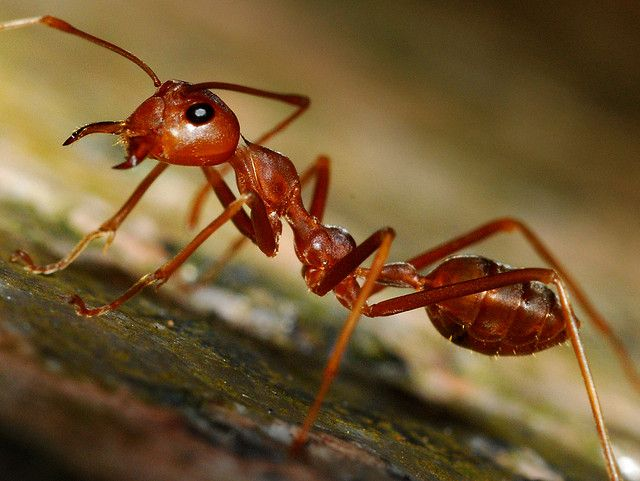

Semut
Makanan Favorit
Semut memakan nektar, madu, serangga kecil, dan sisa makanan manusia. Beberapa spesies bahkan "berternak" kutu daun untuk diambil madunya.
Habitat
Mereka hidup di sarang bawah tanah, di kayu lapuk, atau di celah batu, di hampir semua daratan Bumi. Koloni semut bisa beranggotakan ribuan hingga jutaan individu.
Keunikan
Semut berkomunikasi menggunakan feromon (zat kimia) dan antena. Mereka bekerja sama dalam sistem sosial yang sangat teratur: ratu, pekerja, dan prajurit. Semut juga tidak tidur, tetapi beristirahat dalam siklus pendek.